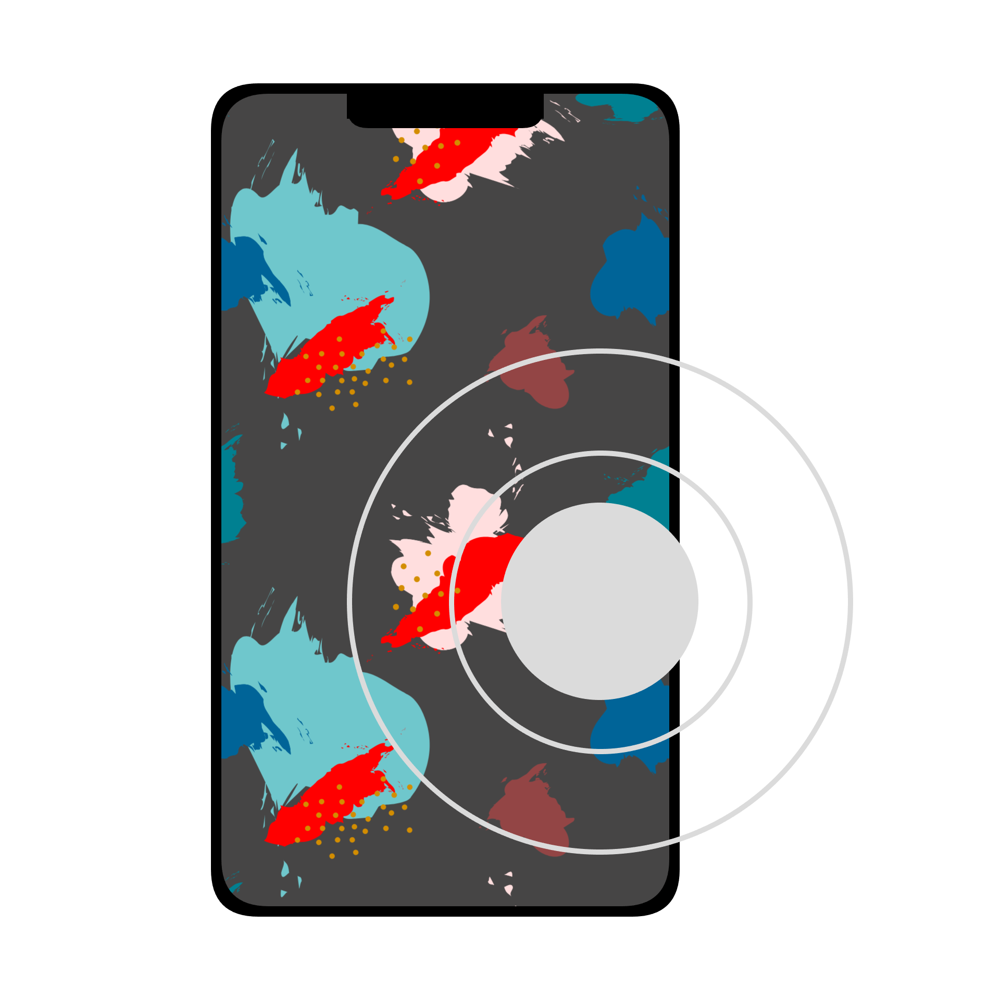

ダウンロードありがとうございます
インストーラのダウンロードが完了したら、次の手順でセットアップしてください。
Step 1
ダウンロードした portapad_installer.exe を開きます。
Step 2
画面の案内に従ってインストールを進めます。
Step 3
スマートフォン側では Web クライアント を開き、QR コードを読み取って接続します。

インストーラのダウンロードが完了したら、次の手順でセットアップしてください。
ダウンロードした portapad_installer.exe を開きます。
画面の案内に従ってインストールを進めます。
スマートフォン側では Web クライアント を開き、QR コードを読み取って接続します。